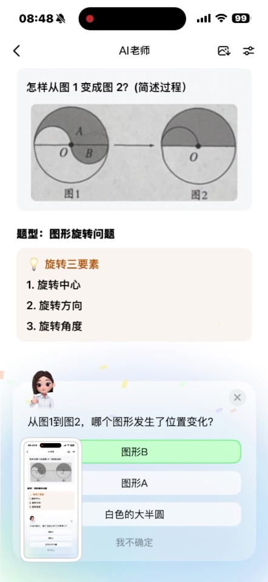
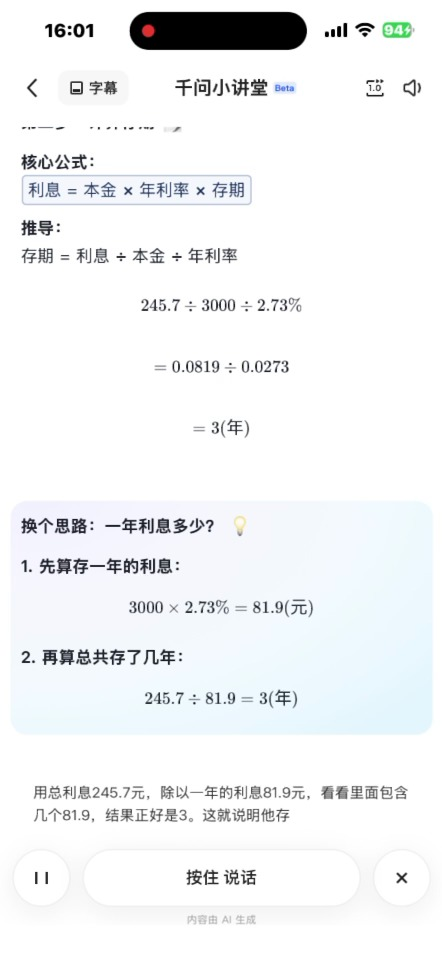
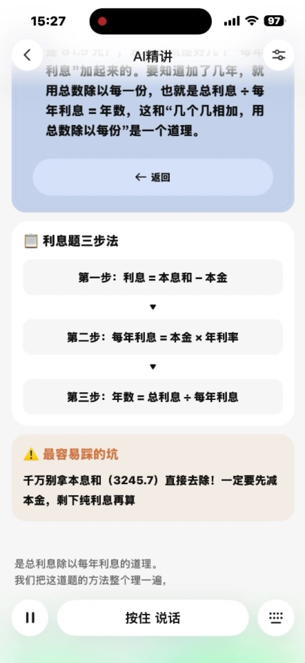

作业从知识巩固走向育人、过程诊断和自主学习能力培养。
BUSINESS ANALYSIS
作业工具
业务分析
以政策、用户、技术、行业和自身能力为框架，判断作业工具真正需要解决的问题，并明确优先业务机会。
研究基础：5个家庭访谈与作业观察、教研研究、竞品体验
业务分析
五看分析框架
步步高
政策确定作业的目标与边界，用户研究找到真实问题，行业分析判断现有方案的满足程度，技术盘点判断机会能否落地。自身优势待专项评估后补充。
孩子在进入状态、卡题和检查订正三个节点反复依赖外部帮助。
已具备五类卡点识别和分层引导基础，步骤级验证仍是短板。
工具功能已经丰富，但多数环节仍由工具替孩子完成。
待补充
阶段判断：以“卡题”为切入口，让工具从完整讲题转向诊断卡点和分级提示，把关键步骤交还给孩子。
01 看政策
作业的目标正在从完成结果转向学习过程
步步高
教研研究显示，作业既要帮助学生巩固知识，也承担培养自主学习能力和诊断学习问题的作用。工具不能只追求更快得出答案。
巩固知识与技能
作业是课堂教学的延伸，帮助学生练习、理解并掌握所学内容。
培养自主学习能力
学生需要在完成作业的过程中练习时间管理、主动求助、检查与改正。
提供过程诊断
通过学生作业表现，诊断学生核心素养发展水平，以及存在的问题，从而改进教学并给予跟进指导。
政策边界
控制作业总量与时长，减少机械重复，原则上以纸质作业为主，避免工具增加新的学习负担。
控制作业总量与时长，减少机械重复，原则上以纸质作业为主，避免工具增加新的学习负担。
对产品的要求
支持孩子自主完成，反馈要及时且有针对性，帮助发现问题和改进方法。
支持孩子自主完成，反馈要及时且有针对性，帮助发现问题和改进方法。
对业务的含义：工具的价值不只在“做完”，更要让孩子在真实作业中学会自己开始、自己解决、自己检查。
02 看用户
目标人群画像
步步高
“重校内提分”的家庭：务实型妈妈＋被动补差型孩子
孩子目前多处在班级中等或中等偏下：熟悉的题能做，遇到基础漏洞、长题或陌生题就容易停住。妈妈不追求一味超前，更在意先把学校作业做对、把薄弱点补上、让成绩稳下来。
孩子：“还没玩够。”“不想写。”“妈妈，这是什么意思？”“妈妈我不会。”
妈妈：“开始要催、难题要讲、写完还要查。”
妈妈：“开始要催、难题要讲、写完还要查。”
能力状态｜会一部分，也缺一部分
简单、熟悉的题做得快；读题、列式或某个基础知识没接上时，不知道自己到底卡在哪里。
作业表现｜不是不写，是很难自己推进
开始前拖，写着容易分心；遇到不会的题就发呆、跳过或等妈妈，写完后很少主动检查。
家庭目标｜先跟上学校，把成绩稳住
妈妈更看重校内作业、基础掌握和考试表现，期待补准薄弱点，不希望增加一套额外学习任务。
现有应对｜家长救场，多种办法轮换
家长陪写、搜题、AI讲题、晚辅班都会用。眼前问题能解决，但妈妈仍要判断什么时候催、什么时候讲、哪里需要补。
画像依据：本次5个家庭访谈与作业观察；引号均来自访谈记录。
02 看用户
孩子的一次真实作业旅程
步步高
六个阶段来自5个样本的共同经历。每一列都把孩子做了什么、心里怎么想、为什么停住和真正需要什么放在一起。
维度 / 阶段
作业前 ①弄清今天写什么
作业前 ②从玩耍切到作业
作业中 ③开始并保持节奏
作业中 ④解决不会的题
作业后 ⑤检查完成情况
作业后 ⑥错题订正讲解
孩子行为
翻登记本、班群和作业本，凭记忆判断，偶尔漏项或把作业忘在学校。
先玩、吃东西、找文具；家长叫几次才慢慢坐到书桌前。
先写简单题；遇到长题、难题就停笔、发呆、跳过，休息后也难回来。
反复读题仍不懂，空着等家长；或直接搜题，看见答案就照着写。
写到最后一题就默认完成，家长在旁边逐项核对，孩子等结果。
家长指出错题后重做；不会时再听一遍讲解，或直接把答案改对。
想法 / 感受
“糟了，忘记语文作业了。”
“还没玩够。” “不想写。”
“生字太多了，要写很久。”
“妈妈，这是什么意思？”
“写完了，那不用检查了。”
“为什么我抄了还会错呢？”
情绪
心虚
不情愿
分心 / 烦
😣 烦躁
紧张
懊恼
痛点
我没记清今天要写什么，有时还把作业忘在学校。
我还想玩，很难马上坐下来写；妈妈提醒、计时也不一定有用。
我写着写着就会分心；一看到长题、难题，就不想继续写了。
我读了几遍还是不知道从哪一步开始；妈妈讲我不一定听懂，搜题又直接看到答案。
我觉得写完就是完成，不知道该检查哪里、怎么检查。
我只知道把答案改对，却不知道自己为什么错、下次该怎么做。
用户需求
我希望把当天任务和材料核清楚，从而不漏作业、不来回找东西。
我希望有人帮我迈出很小的第一步，从而能从玩耍切换到作业。
我希望走神或停住时被轻轻拉回来，从而按自己的节奏继续写。
我希望先给我提示，从而让我自己把题目做出来。
我希望知道哪里值得再看、应该怎么查，从而自己发现并改正问题。
我希望弄明白为什么错、下次怎么做，从而不只把这次答案改对。
引号为访谈中的孩子原话；行为、痛点和需求由5个样本的重复现象归纳。
02 看用户
作业前、中、后的核心痛点
步步高
先按作业阶段还原问题，再用5个样本中的覆盖人数判断优先级。红色为覆盖5/5样本的核心痛点。
| 阶段 | 痛点 | 用户原话 / 现场表现 | 数量 | 频繁程度 | 优先级 |
|---|---|---|---|---|---|
| 作业前 | 靠催促才开始写 | “还没玩够。”“不想写。”有孩子从7:30玩到9:15，等妈妈回家才动笔。 | 5/5 | 每天 / 经常 | 核心 |
| 作业前 | 任务、材料和顺序不清 | 漏记作业、忘带书本，不会安排先做什么，甚至未完成却以为“做完了”。 | 3/5 | 偶发 / 周期性 | 一般 |
| 作业中 | 卡题时不知道下一步 | “妈妈，这是什么意思？”“妈妈我不会。”不会时停住、空着或等家长。 | 5/5 | 每遇难题 | 核心 |
| 作业中 | 家长要持续监督和救场 | 开始要催、过程要盯、难题要讲、写完还要查；家长一走开，节奏容易断。 | 5/5 | 贯穿作业 | 核心 |
| 作业中 | 容易分心，节奏反复中断 | 写两题就玩、发呆或找别的事；休息后很难重新回到作业。 | 4/5 | 经常 | 较高 |
| 作业后 | 写完不主动检查 | “写完了，那不用检查了。”漏题、抄错和计算错误常等家长指出。 | 5/5 | 经常 | 核心 |
| 作业后 | 订正停在改答案，缺少复盘 | “为什么我抄了还会错呢？”部分孩子重新抄写或听完讲解，没有说清自己错在哪里。 | 3/5 | 订正时出现 | 一般 |
覆盖5/5样本的四个核心问题：开始要催、卡题后停住、家长持续监督、写完不主动检查。
数量指本轮5个样本中的覆盖人数，用于本轮机会排序，不代表总体人群发生率。
04 看行业
核心痛点的行业解决方案
步步高
直接竞品、搜题批改工具和通用AI已经覆盖大量功能，但对“孩子能否完成关键动作”的支持仍不充分。
| 核心痛点 | 行业主要方案 | 当前满足程度 | 仍未解决的问题 |
|---|---|---|---|
| 进入状态难 | 作业清单、计划、番茄钟、倒计时、家长远程提醒 | 部分满足 任务和时间可以被看见 | 仍依赖孩子主动打开并执行，较少同时完成任务确认、顺序安排和第一步拆解。 |
| 卡题后停住 | 搜题、视频解析、AI讲题、动态板书、多轮问答、变式练习 | 功能最丰富 能够完整讲解一道题 | 多数由AI主讲整道题，孩子被动听完。较少先判断卡点、只提示当前一步，再让孩子继续做。 |
| 写完后不会检查 | 拍照批改、错因分析、错题本、知识点练习 | 判错能力较强 能快速定位错误 | 擅长告诉孩子哪里错了，较少教孩子如何自己发现、订正并说明原因。 |
| 订正后是否掌握 | 错题归档、举一反三、知识点复习、学情报告 | 部分满足 能够提供后续练习 | 单题讲解与通用方法之间仍有断层，是否真正会做通常缺少独立作答验证。 |
行业空白：计划、讲题和批改都在替孩子完成任务，缺少“工具支持、孩子完成”的自主作业闭环。
04 看行业
三个AI工具的讲题方式
步步高
豆包爱学
分步跟随型

录屏证据：先识别题型与关键要素，再穿插选择题确认跟随。
识别题型 → 提炼要素 → 提问确认 → 分步讲解 → 给出结论
值得学习
每次只推进一个知识点，并用选项让孩子参与，跟随门槛低。
当前不足
关键判断仍由AI设定，孩子多在预设答案中选择，独立思考有限。
千问
概念关系型

录屏证据：用核心公式、图示关系和换个思路解释同一道题。
解释概念 → 画出关系 → 分步计算 → 换一种思路 → 回顾
值得学习
能把抽象数量关系画出来，并从不同角度解释，帮助孩子真正看懂题意。
当前不足
内容较长，AI连续主讲；讲完缺少让孩子独立完成关键步骤的验证。
元宝
方法迁移型

录屏证据：题后沉淀“三步法”并提示最容易踩的坑。
提取关键量 → 生活类比 → 三步求解 → 总结方法 → 易错提醒
值得学习
把一道题总结为通用步骤和易错点，最接近“讲一道，会一类”。
当前不足
方法总结清楚，但推理过程仍由AI完成，孩子是否会用尚未被证明。
共性：都能把当前题讲完整，图示、语音和结构化步骤越来越成熟。
差异：豆包爱学强在分步互动，千问强在概念关系解释，元宝强在题后方法沉淀。
共同缺口：较少先判断孩子具体卡点，再用最小提示让孩子完成关键一步；“听懂”与“会做”之间仍缺验证。
差异：豆包爱学强在分步互动，千问强在概念关系解释，元宝强在题后方法沉淀。
共同缺口：较少先判断孩子具体卡点，再用最小提示让孩子完成关键一步；“听懂”与“会做”之间仍缺验证。
03 看技术
现有技术能否支撑四个核心痛点
步步高
结论不看“有没有这个功能”，而看它能否在真实作业中稳定解决问题。现有技术对四个核心痛点均有基础，但满足程度不同。
| 核心痛点 | 现有技术基础 | 支撑判断 | 还缺什么 |
|---|---|---|---|
| 开始要催 | 支持拍照、截图、语音录入作业，能解读任务、安排顺序、估算时间。 | 部分支撑 能把任务变清楚 | 能减少“我不知道先写什么”，但不能直接解决“不想开始”；启动提醒的实际效果还需验证。 |
| 卡题后停住 | 已建立五类卡点识别，并提供条件提示、思路点拨、知识铺垫和步骤拆解。 | 可支撑原型 基础最完整 | 卡点特征提取成熟度高，但多分类模型为中；还要验证判断是否准确、提示是否刚好够用。 |
| 家长持续监督 | 可以追踪停留题目、时长、笔迹及分心、离座等行为，并触发提醒或家长通知。 | 部分支撑 能发现部分异常 | 作答过程追踪和主动督学指标仍需确认；提醒过多还可能变成另一种“催”。 |
| 写完不主动检查 | 题目识别、答案比对和规则解题可快速判错；小学三科批改率89.74%、批对率92.42%。 | 部分支撑 能替孩子发现错误 | 当前强项是系统判错，还不能证明孩子学会自己检查；步骤级批改成熟度低。 |
技术结论：现有技术能够支撑第一阶段产品验证，尤其适合先做“卡题判断＋分级提示”和“写完后的错误发现”；但暂时只能部分解决启动、监督和自主检查。技术目前更擅长替孩子发现问题，还不够擅长帮助孩子自己完成关键动作。
建议先落地聚焦数学卡题：识别孩子卡在哪一类，只给当前一步提示，再观察孩子能否继续完成。
验证成功的标准不展示完整答案时，孩子能在提示后自己写出下一步；同时减少家长介入，而不是增加新的提醒。
资料来源：《作业业务线技术能力全景》；成熟度、准确率及“需进一步验证”状态沿用原素材口径。
05 看自己
已有高频入口，优势集中在搜题与批改
步步高
业务数据说明，用户已经习惯在学习机上解决作业问题。下一步不是重新建立入口，而是把现有“搜题＋批改”升级为对作业过程的支持。
59.7%小学端周活渗透率
AI作业工具排名第一
57.0%初中端周活渗透率
AI作业工具排名第一
80,305S9整机周活用户
本次应用级数据基础
搜题之后，原题视频链路快速流失
6月S9搜题使用1,644,777次；以下比例均以搜题使用次数为分母
⌕100%发起搜题1,644,777次
→▣40%能搜到原题视频657,911次
→▶11.54%点击原题视频189,738次
→✓3.44%视频完播56,599次，约3%
业务含义：60%的搜题没有原题视频；即使有视频，最终完整看完的仅占全部搜题约3%。现有视频讲题没有有效承接大多数卡题需求。
已有优势
作业是高频入口；搜题、讲题和批改已经形成稳定的使用习惯。
当前短板
产品更擅长给答案和快速判错；原题视频最终完播仅占全部搜题3.44%，讲完整题没有有效承接多数卡题需求。
可利用的基础
把题目识别、搜题讲题、批改和学情数据串起来，升级为“判断卡点—分级提示—孩子继续完成”。
看自己的结论：我们已有入口、用户和基础能力，具备从“结果型工具”升级为“过程型作业工具”的条件；差异化不在多一个搜题或批改功能，而在帮助孩子自己完成关键一步。
数据来源：S9机型，2026.5.18—5.24；整机周活80,305人。应用周活与功能周活口径不同，不进行加总。
业务机会
从“给答案”升级为“帮孩子自己做出来”
步步高
核心业务机会
把高频搜题入口升级为“作业卡点助手”
面向“重校内提分”的家庭，孩子卡住时先判断问题，只给刚好够用的提示，让孩子完成关键一步；家长不必每次过来讲，孩子在作业中逐步获得胜任感。
产品理念：让孩子在作业中获得胜任感，逐步实现自主学习。
孩子不会判断下一步，家长持续承担救场角色。
能把整道题讲完，但孩子参与少，“听懂”不等于“会做”。
可以支持原型，重点验证判断准确率和最小提示效果。
已有入口，但现有完整视频没有有效承接大多数卡题需求。
首期聚焦：数学卡题
- 看见：识别题目和孩子已经写到哪一步。
- 判断：区分读不懂、找不到条件、没思路、知识缺口或计算错误。
- 提示：先给方向或一个问题，不直接展示完整答案。
- 孩子完成：让孩子写出下一步，仍不会再逐级增加帮助。
- 确认：检查这一步是否正确，必要时再继续提示。
机会优先级
用户最痛、技术基础最完整，也是现有搜题和讲题能力最自然的升级。
利用批改能力先提示可疑范围和检查方法，逐步把检查动作交还给孩子。
先小范围验证提醒是否真的减少家长催促，再决定是否扩大投入。
是否做对，不看“讲了多少题”，看三个结果：提示后独立完成下一步完整答案查看减少家长介入次数下降
业务边界：聚焦解决真实作业过程中的具体问题，不替代学校教学，不把AI做成从头讲到尾的老师。